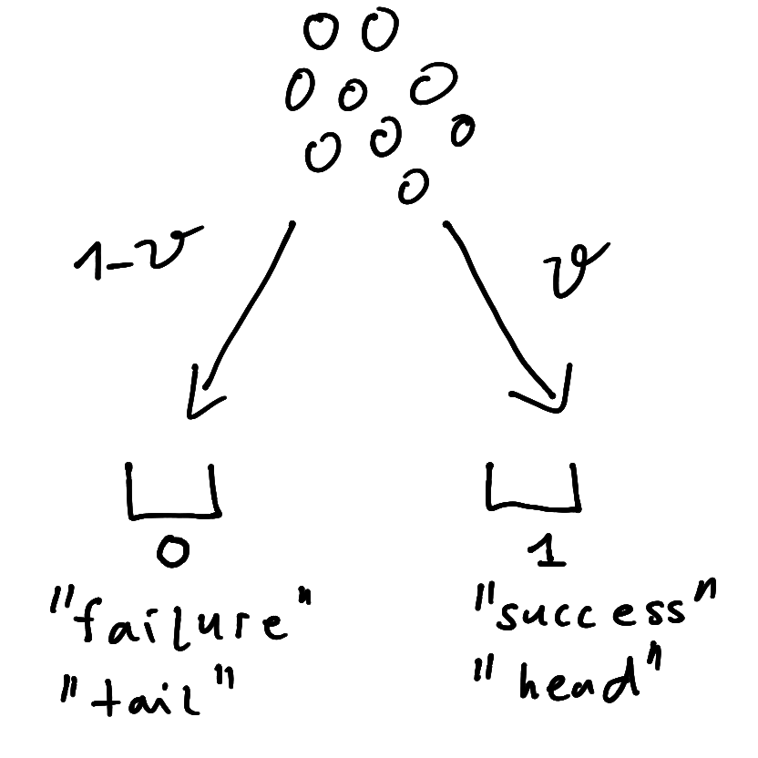
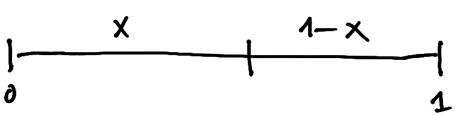
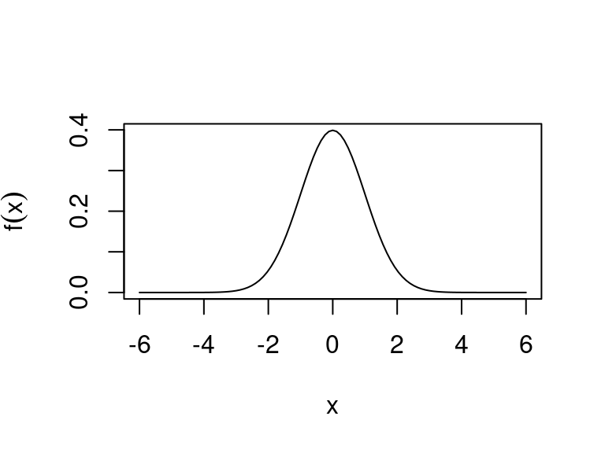
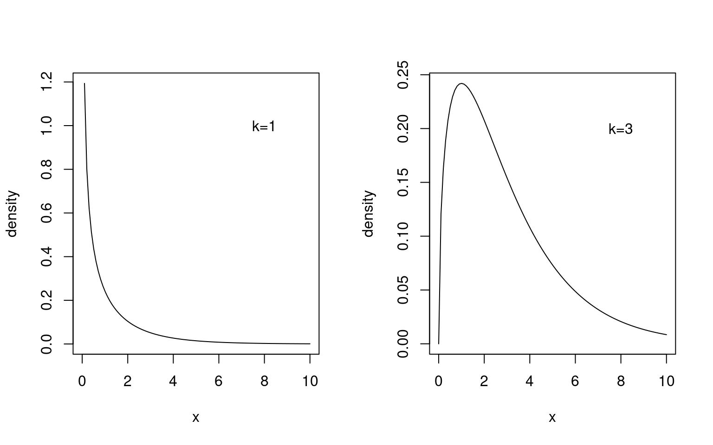
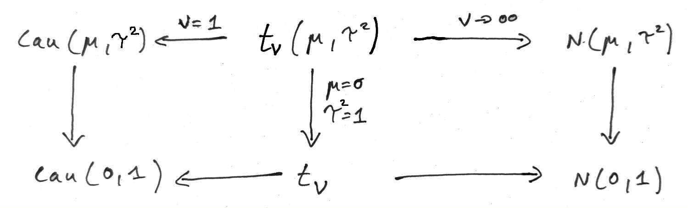

4 Univariate distributions
4.1 Bernoulli distribution
The Bernoulli distribution \(\text{Ber}(\theta)\) is the simplest of all distribution families. It is named after Jacob Bernoulli (1655-1705) who also discovered the law of large numbers.
It describes a discrete binary random variable with two states \(x=0\) (“failure”) and \(x=1\) (“success”), where the parameter \(\theta \in [0,1]\) is the probability of “success”. Often the Bernoulli distribution is also referred to as “coin tossing” model with the two outcomes “heads” and “tails”.
Correspondingly, the probability mass function of \(\text{Ber}(\theta)\) is \[ p(x=0 | \theta) = \text{Pr}(\text{"failure"}| \theta) = 1-\theta \] and \[ p(x=1| \theta) = \text{Pr}(\text{"success"}| \theta) = \theta \] A compact way to write the PMF of the Bernoulli distribution is \[ p(x | \theta ) = \theta^{x} (1-\theta)^{1-x} \] The log PMF is \[ \log p(x | \theta ) = x \log \theta + (1-x)\log (1-\theta) \]
If a random variable \(x\) follows the Bernoulli distribution we write \[ x \sim \text{Ber}(\theta) \,. \] The expected value is \(\text{E}(x) = \theta\) and the variance is \(\text{Var}(x) = \theta (1 - \theta)\).
4.2 Binomial distribution
Closely related to the Bernoulli distribution is the binomial distribution \(\text{Bin}(n, \theta)\) which results from repeating a Bernoulli experiment \(n\) times and counting the number of successes among the \(n\) trials (without keeping track of the ordering of the experiments). Thus, if \(x_1, \ldots, x_n\) are \(n\) independent \(\text{Ber}(\theta)\) random variables then \(y = \sum_{i=1}^n x_i\) is distributed as \(\text{Bin}(n, \theta)\).
If a random variable \(y\) follows the binomial distribution we write \[ y \sim \text{Bin}(n, \theta)\, \]
The corresponding probability mass function is: \[ p(y | n, \theta) = \binom{n}{y} \theta^y (1 - \theta)^{n - y} \] with support \(y \in \{ 0, 1, 2, \ldots, n\}\). The binomial coefficient \(\binom{n}{y}\) is needed to account for the multiplicity of ways (orderings of samples) in which we can observe \(y\) successes.
The expected value is \(\text{E}(y) = n \theta\) and the variance is \(\text{Var}(y) = n \theta (1 - \theta)\).
If we standardise the support of the binomial variable to the unit interval with \(\frac{y}{n} \in \left\{0,\frac{1}{n},...,1\right\}\) then the mean is \(\text{E}\left(\frac{y}{n}\right) = \theta\) and the variance is \(\text{Var}\left(\frac{y}{n}\right)=\frac{\theta (1-\theta)}{n}\).
The binomial distribution may be illustrated by an urn model distributing \(n\) balls into \(2\) bins:
For \(n=1\) the binomial distribution reduces to the Bernoulli distribution.
In R the PMF of the binomial distribution is given by dbinom(), the cumulative distribution function is pbinom() and the quantile function is qbinom(). The binomial coefficient itself is computed by choose().
As a result of the central limit theorem, the binomial distribution, obtained as the convolution of \(n\) Bernoulli distributions, can for large \(n\) be well approximated by a normal distribution (this is known as the De Moivre–Laplace theorem).
4.3 Beta distribution
4.3.1 Standard parameterisation
A beta-distributed random variable is denoted by \[ x \sim \text{Beta}(\alpha, \beta) \] where the support is \(x \in [0,1]\) and \(\alpha>0\) and \(\beta>0\) are two shape parameters.
The beta random variable can be visualised as breaking a unit stick of length one into two pieces of length \(x\) and \(1-x\):

The density of the beta distribution \(\text{Beta}(\alpha, \beta)\) is \[ p(x | \alpha, \beta) = \frac{1}{B(\alpha, \beta)} x^{\alpha-1} (1-x)^{\beta-1} \] This depends on the beta function defined as \[ B(z_1, z_1) = \frac{ \Gamma(z_1) \Gamma(z_2)}{\Gamma(z_1 + z_2)} \]
The beta distribution is very flexible and can assume a number of different shapes, depending on the value of \(\alpha\) and \(\beta\). For example, for \(\alpha=\beta=1\) it becomes the uniform distribution over the unit interval:

In R the PDF of the beta distribution is given by dbeta(), the cumulative distribution function is pbeta() and the quantile function is qbeta().
4.3.2 Mean parameterisation
Instead of employing \(\alpha\) and \(\beta\) as parameters another useful reparameterisation \(\text{Beta}(\mu, k)\) of the beta distribution is in terms of a mean parameter \(\mu \in [0,1]\) and a concentration parameter \(k > 0\). These are given by \[ k=\alpha+\beta \] and \[\mu = \frac{\alpha}{\alpha+\beta} \] The original parameters can be recovered by \(\alpha= \mu k\) and \(\beta=(1-\mu) k\).
The mean and variance of the beta distribution expressed in terms of \(\mu\) and \(k\) are \[ \text{E}(x) = \mu \] and \[ \text{Var}(x)=\frac{\mu (1-\mu)}{k+1} \] With increasing concentration parameter \(k\) the variance decreases and thus the probability mass becomes more concentrated around the mean.
The uniform distribution (with \(\alpha=\beta=1\)) corresponds to \(\mu=1/2\) and \(k=2\).
Finally, note that the mean and variance of the continuous beta distribution closely match those of the unit-standardised discrete binomial distribution above.
4.4 Normal distribution
The normal distribution is the most important continuous probability distribution. It is also called Gaussian distribution named after Carl Friedrich Gauss (1777–1855).
The univariate normal distribution \(N(\mu, \sigma^2)\) has two parameters \(\mu\) (location) and \(\sigma^2\) (scale) and support \(x \in ]-\infty, \infty[\).
\[ x \sim N(\mu,\sigma^2) \] with mean \[ \text{E}(x)=\mu \] and variance \[ \text{Var}(x) = \sigma^2 \]
Probability density function (PDF): \[ p(x| \mu, \sigma^2)=(2\pi\sigma^2)^{-\frac{1}{2}}\exp\left(-\frac{(x-\mu)^2}{2\sigma^2}\right) \]
The standard normal distribution is \(N(0, 1)\) with mean 0 and variance 1.
Plot of the PDF of the standard normal:

The cumulative distribution function (CDF) of the standard normal \(N(0,1)\) is \[ \Phi (x ) = \int_{-\infty}^{x} p(x'| \mu=0, \sigma^2=1) dx' \] There is no analytic expression for \(\Phi(x)\).
Plot of the CDF of the standard normal:

The inverse \(\Phi^{-1}(p)\) is called the quantile function of the standard normal.

In R the normal PDF is given by dnorm(), the cumulative distribution function is pnorm() and the quantile function is qnorm().
4.5 Gamma distribution and special cases
The gamma distribution is widely used in statistics, and also appears in various parameterisations and under some other names, such as univariate Wishart and scaled chi-squared distribution
4.5.1 Standard parameterisation
The gamma distribution \(\text{Gam}(\alpha, \theta)\) is a continuous distribution with two parameters \(\alpha>0\) (shape) and \(\theta>0\) (scale): \[ x \sim\text{Gam}(\alpha, \theta) \] and support \(x \in [0, \infty[\) with mean \[\text{E}(x)=\alpha \theta\] and variance \[\text{Var}(x) = \alpha \theta^2\]
The gamma distribution is also often used with a rate parameter \(\beta=1/\theta\) (so one needs to pay attention which parameterisation is used).
The probability density function (PDF) is: \[
p(x| \alpha, \theta)=\frac{1}{\Gamma(\alpha) \theta^{\alpha} } x^{\alpha-1} e^{-x/\theta}
\] The density of the gamma distribution is available in the R function dgamma(). The cumulative density function is pgamma() and the quantile function is qgamma().
4.5.2 Wishart parameterisation and scaled chi-squared distribution
The gamma distribution is often used with a different set of parameters \(k=2 \alpha\) and \(s^2 =\theta/2\) (hence conversely \(\alpha = k/2\) and \(\theta=2 s^2\)). In this form it is known as univariate or one-dimensional Wishart distribution \[ \text{W}_1\left(s^2, k \right) \] named after John Wishart (1898–1954). In the Wishart parameterisation the mean is \[ \text{E}(x) = k s^2 \] and the variance \[ \text{Var}(x) = 2 k s^4 \]
Another name for the one-dimensional Wishart distribution with exactly the same parameterisation is scaled chi-squared distribution denoted as \[ s^2 \text{$\chi^2_{k}$} \]
Finally, we also often employ the Wishart distribution in mean parameterisation \[ \text{W}_1\left(s^2= \frac{\mu}{k}, k \right) \] with parameters \(\mu = k s^2\) and \(k\) (and thus \(\theta = 2 \mu /k\)). In this parameterisation the mean is \[ \text{E}(x) = \mu \] and the variance \[ \text{Var}(x) = \frac{2 \mu^2}{k} \]
4.5.3 Construction as sum of squared normals
A gamma distributed variable can be constructed as follows. Assume \(k\) independent normal random variables with mean 0 and variance \(s^2\): \[z_1,z_2,\dots,z_k\sim N(0,s^2)\] Then the sum of the squares \[ x = \sum_{i=1}^{k} z_i^2 \] follows \[ \begin{split} x \sim & \phantom{=} s^2 \text{$\chi^2_{k}$} \\ & = \text{W}_1\left( s^2, k \right)\\ & =\text{Gam}\left(\alpha=\frac{k}{2}, \theta = 2 s^2\right) \end{split} \]
4.5.4 Chi-squared distribution
The chi-squared distribution \(\text{$\chi^2_{k}$}\) is a special one-parameter restriction of the gamma resp. Wishart distribution obtained when setting \(s^2=1\) or, equivalently, \(\theta = 2\) or \(\mu = k\).
It has mean \(\text{E}(x)=k\) and variance \(\text{Var}(x)=2k\). The chi-squared distribution \(\text{$\chi^2_{k}$}\) equals \(\text{Gam}(\alpha=k/2, \theta=2) = \text{W}_1\left(1, k \right)\).
Here is a plot of the density of the chi-squared distribution for degrees of freedom \(k=1\) and \(k=3\):

In R the density of the chi-squared distribution is given by dchisq(). The cumulative density function is pchisq() and the quantile function is qchisq().
4.5.5 Exponential distribution
The exponential distribution \(\text{Exp}(\theta)\) with scale parameter \(\theta\) is another special one-parameter restriction of the gamma distribution with shape parameter set to \(\alpha=1\) (or equivalently \(k=2\)).
It thus equals \(\text{Gam}(\alpha=1, \theta) = \text{W}_1(s^2=\theta/2, k=2)\). It has mean \(\theta\) and variance \(\theta^2\).
Just like the gamma distribution the exponential distribution is also often specified using a rate parameter \(\beta= 1/\theta\) instead of a scale parameter \(\theta\).
In R the command dexp() returns the density of the exponential distribution, pexp() is the corresponding cumulative density function and qexp() is the quantile function.
4.6 Inverse gamma distribution
Also know as inverse univariate Wishart distribution.
4.6.1 Standard parameterisation
A random variable \(x\) following an inverse gamma distribution is denoted by \[ x \sim \text{Inv-Gam}(\alpha, \beta) \] with two parameters \(\alpha >0\) (shape parameter) and \(\beta >0\) (scale parameter) and support \(x >0\).
The inverse of \(x\) is then gamma distributed \[ \frac{1}{x} \sim \text{Gam}(\alpha, \theta=\beta^{-1}) \] where \(\alpha\) is the shared shape parameter and \(\theta\) the scale parameter of the gamma distribution.
The inverse gamma distribution \(\text{Inv-Gam}(\alpha, \beta)\) has density \[ p(x | \alpha, \beta) = \frac{\beta^{\alpha}}{\Gamma(\alpha)} (1/x)^{\alpha+1} e^{-\beta/x} \]
The mean of the inverse gamma distribution is \[\text{E}(x) = \frac{\beta}{\alpha-1}\] and the variance \[\text{Var}(x) = \frac{\beta^2}{(\alpha-1)^2 (\alpha-2)}\]
Thus, for the mean to exist we have the restriction \(\alpha>1\) and for the variance to exist \(\alpha>2\).
In the R extraDistr package the density of the inverse gamma distribution is given by extraDistr::dinvgamma(), the function extraDistr::pinvgamma() returns the corresponding cumulative density and extraDistr::qinvgamma() is the quantile function.
4.6.2 Wishart parameterisation
The inverse gamma distribution is frequently used with a different set of parameters \(\psi = 2\beta\) (scale parameter) and \(\nu = 2\alpha\) (shape parameter), or conversely \(\alpha=\nu/2\) and \(\beta=\psi/2\). In this form it is called one-dimensional inverse Wishart distribution \[ \text{W}^{-1}_1(\psi, \nu) \] with mean given by \[ \text{E}(x) = \frac{\psi}{\nu-2} \] for \(\nu>2\) and variance \[ \text{Var}(x) =\frac{2 \psi^2}{(\nu-2)^2 (\nu-4) } \] for \(\nu >4\).
The inverse univariate Wishart and univariate Wishart distributions are linked. If a random variable \(x\) is inverse Wishart distributed \[ x \sim \text{W}^{-1}_1(\psi, \nu) \] then the inverse of \(x\) is Wishart distributed with inverted scale parameter: \[\frac{1}{x} \sim \text{W}_1(s^2=\psi^{-1}, k=\nu)\] where \(k\) is the shape parameter and \(s^2\) the scale parameter of the Wishart distribution.
Instead of \(\psi\) and \(\nu\) we may also equivalently use \(\kappa=\nu-2\) and \(\mu = \psi/(\nu-2)\) as parameters for the inverse Wishart distribution, so that \[ \text{W}^{-1}_1(\psi=\kappa \mu, \nu=\kappa+2) \] has mean \[\text{E}(x) = \mu\] with \(\kappa>0\) and the variance is \[\text{Var}(x) = \frac{2 \mu^2}{\kappa-2}\] with \(\kappa>2\). This mean parameterisation is useful when employing the inverse gamma distribution as prior and posterior.
Finally, with \(\text{W}^{-1}_1(\psi=\nu \tau^2, \nu)\), where \(\tau^2 = \mu \frac{ \kappa}{\kappa+2} = \frac{\psi}{\nu}\) is a biased mean parameter, we get the scaled inverse chi-squared distribution \(\tau^2 \text{Inv-$\chi^2_{\nu}$}\) with \[ \text{E}(x) = \tau^2 \frac{ \nu}{\nu-2} \] for \(\nu>2\) and \[ \text{Var}(x) =\frac{2 \tau^4}{\nu-4} \frac{\nu^2}{(\nu-2)^2} \] for \(\nu >4\).
4.7 Location-scale \(t\)-distribution and special cases
4.7.1 Location-scale \(t\)-distribution
The location-scale \(t\)-distribution \(\text{lst}(\mu, \tau^2, \nu)\) is a generalisation of the normal distribution. It has an additional parameter \(\nu > 0\) (degrees of freedom) that controls the probability mass in the tails. For small values of \(\nu\) the distribution is heavy-tailed — indeed so heavy that for \(\nu \leq 1\) even the mean is not defined and for \(\nu \leq 2\) the variance is undefined.
The probability density of \(\text{lst}(\mu, \tau^2, \nu)\) is \[ p(x | \mu, \tau^2, \nu) = \frac{\Gamma(\frac{\nu+1}{2})} {\sqrt{\pi \nu \tau^2} \,\Gamma(\frac{\nu}{2})} \left(1+\frac{(x-\mu)^2}{\nu \tau^2} \right)^{-(\nu+1)/2} \] with support \(x \in ]-\infty, \infty[\). The mean is (for \(\nu>1\)) \[ \text{E}(x) = \mu \] and the variance (for \(\nu>2\)) \[ \text{Var}(x) = \tau^2 \frac{\nu}{\nu-2} \]
For \(\nu \rightarrow \infty\) the location-scale \(t\)-distribution \(\text{lst}(\mu, \tau^2, \nu)\) becomes the normal distribution \(N(\mu, \tau^2)\).
In the R extraDistr package the command extraDistr::dlst() returns the density of the location-scale \(t\)-distribution, extraDistr::plst() is the corresponding cumulative density function and extraDistr::qlst() is the quantile function.
The following figure illustrates the relationship of the location-scale \(t\) distribution \(\text{lst}(\mu, \tau^2, \nu)\) with related distributions such as the normal distribution \(N(\mu, \tau^2)\), Student’s \(t\)-distribution \(t_\nu\) and the Cauchy distribution \(\text{Cau}(\mu, \tau)\) discussed further below.

4.7.2 Location-scale \(t\)-distribution as compound distribution
Suppose that \[ x | s^2 \sim N(\mu,s^2) \] with corresponding density \(p(x | s^2)\) and mean \(\text{E}(x | s^2) = \mu\) and variance \(\text{Var}(x|s^2) = s^2\).
Now let the variance \(s^2\) be distributed as univariate inverse gamma / inverse Wishart \[ s^2 \sim \text{W}^{-1}_1(\psi=\kappa \sigma^2, \nu=\kappa+2) = \text{W}^{-1}_1(\psi=\tau^2\nu, \nu) \] with corresponding density \(p(s^2)\) and mean \(\text{E}(s^2) = \sigma^2 = \tau^2 \nu/(\nu-2)\). Note we use here both the mean parameterisation (\(\sigma^2, \kappa\)) and the inverse chi-squared parameterisation (\(\tau^2, \nu\)).
The joint density for \(x\) and \(s^2\) is \(p(x, s^2) = p(x | s^2) p(s^2)\). We are interested in the marginal density for \(x\): \[ p(x) = \int p(x, s^2) ds^2 = \int p(s^2) p(x | s^2) ds^2 \] This is a compound distribution of a normal with fixed mean \(\mu\) and variance \(s^2\) varying according the inverse gamma distribution. Calculating the integral results in the location-scale \(t\)-distribution with parameters \[ x \sim \text{lst}\left(\mu, \sigma^2 \frac{\kappa}{\kappa+2}, \kappa+2\right) = \text{lst}\left(\mu, \tau^2, \nu\right) \] with mean \[ \text{E}(x) = \mu \] and variance \[ \text{Var}(x) = \sigma^2 =\tau^2 \frac{\nu}{\nu-2} \]
From the law of total expectation and variance we can also directly verify that \[ \text{E}(x) = \text{E}( \text{E}(x| s^2) ) =\mu \] and \[ \text{Var}(x) = \text{E}(\text{Var}(x|s^2))+ \text{Var}(\text{E}(x|s^2)) = \text{E}(s^2) = \sigma^2 =\tau^2 \frac{\nu}{\nu-2} \]
4.7.3 Student’s \(t\)-distribution
For \(\mu=0\) and \(\tau^2=1\) the location-scale \(t\)-distribution becomes the Student’s \(t\)-distribution \(t_\nu\) with mean 0 (for \(\nu>1\)) and variance \(\frac{\nu}{\nu-2}\) (for \(\nu>2\)).
It can thus be viewed as a generalisation of the standard normal distribution \(N(0,1)\).
If \(y \sim t_\nu\) then \(x = \mu + \tau y\) is distributed as \(x \sim \text{lst}(\mu, \tau^2, \nu)\).
For \(\nu \rightarrow \infty\) the \(t\)-distribution becomes equal to \(N(0,1)\).
The probability density of \(t_\nu\) is \[ p(x | \nu) = \frac{\Gamma(\frac{\nu+1}{2})} {\sqrt{\pi \nu} \,\Gamma(\frac{\nu}{2})} \left(1+\frac{x^2}{\nu} \right)^{-(\nu+1)/2} \] with support \(x \in ]-\infty, \infty[\).
In R the command dt() returns the density of the \(t\)-distribution, pt() is the corresponding cumulative density function and qt() is the quantile function.
4.7.4 Cauchy and standard Cauchy distribution
For \(\nu=1\) the location-scale \(t\)-distribution becomes the Cauchy distribution \(\text{Cau}(\mu, \tau)\) with density \(p(x| \mu, \tau) = \frac{\tau}{\pi (\tau^2+(x-\mu)^2)}\).
For \(\nu=1\) the \(t\)-distribution becomes the standard Cauchy distribution \(\text{Cau}(0, 1)\) with density \(p(x) = \frac{1}{\pi (1+x^2)}\).